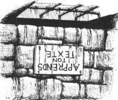

|
|
Seigneur Havelock VétériniLord Havelock Vetinari | |
Patricien, le Seigneur Havelock Vétérini. Âge incertain. Formation inconnue. Selon la rumeur publique formé à la GUILDE DES ASSASSINS. Maintenant le dirigeant suprême de la ville d'Ankh-Morpork, à laquelle il est totalement consacré. Grand, mince et généralement habillé en noir. Il est le dernier d'une succession de chefs non élus. Ceux-ci n'étaient pas des hommes très plaisants ou bien équilibrés et ont bientôt rencontré leurs fins, aussi bien qu'un tisonnier ardent dans le cas d'un dirigeant particulièrement impopulaire. Le Seigneur Vétérini, d'autre part, est très, très raisonnable. Et toujours vivant. Il a été remarqué que si on jetait le Patricien à une horde de loups, il, après avoir bavardé avec eux quelques minutes, les ferait se déchirer mutuellement en lambeaux. C'est certainement pour cela aussi que, quand il a été jeté dans un de ses propres cachots infestés de rats (des cachots souterrains remplis de scorpion), il a organisé les rats pour manger les scorpions. Ces sympathiques petits rongeurs lui apportaient ensuite de la nourriture et les dernières nouvelles du jour. Il à aussi, des années auparavant, dissimulé une clef du cachot souterrain derrière un bloc secret; il a d'ailleurs écrit dans un mémoire non publié:"ne construisez jamais un cachot souterrain dont vous ne pouvez pas sortir". Il n'a strictement aucun vices dans n'importe quel sens normal du terme. S'il en avait ne serait-ce q'un, nous pouvons être sûrs que quelque Guilde ou d'autres particuliers se serait servi d'eux à ce jour. Il est vrai qu'il a interdit le théâtre de rue et accroche des mime à l'envers dans une fosse de scorpion en face d'un écriteaux qui dit "Apprend ton texte" , mais cela peut être pardonnable ou du moins considéré comme un trait de caractère amusant. Il a un petit et très vieux terrier, auquel, on dit qu'il est très attaché (bien que l'on ne l'ait pas vu dans des volumes récents et, vraisemblablement, même des dirigeants despotiques ont une pièce triste de terre derrière la cabane à outils). Son plus grand ennemi est probablement le Capitaine Vimaire du Guet municipal, mais, étrangement, la personne avec qui il réussit le mieux - ou le moins horriblement - est le Caporal Carotte du Guet lui aussi. Ils partagent le même intérêt obsédant pour la ville. Le Seigneur Vétérini vit dans ce qui était autrefois le Palais D'hiver de la famille royale dans Morpork. Il gère la ville ou bien d'un siège en bois au pied de trône antique d'or de la ville, ou bien, plus souvent, du Bureau Oblong, en haut du palais. C'est là qu'il recueille l'information. Les gens lui disent des choses, pour toutes sortes de raisons. Il a une chambre à coucher. Il dort vraisemblablement. Le Patricien a exprimé le désir de, un jour, partir à la retraite et cultiver un jardin. Cela n'arrivera probablement jamais. Il est impossible de l'imaginer comme un simple civil. Mais s'il avait en effet pris l'horticulture, les roses grandiraient en lignes, le jardin fleurirait sur commande - et les limaces mangeraient les chenilles. Il officie (non ce n'est toujours pas un pRaticien, mais un patRicien) dans : La Huitième Couleur, Sourcellerie, Au Guet !, Les Zinzins d'Olive-Oued, Le Faucheur, Le Guet des Orfèvres, Accroc au Roc, Les tribulations d'un mage en Aurient, Pieds d'Argile, Va-t-en-guerre. |